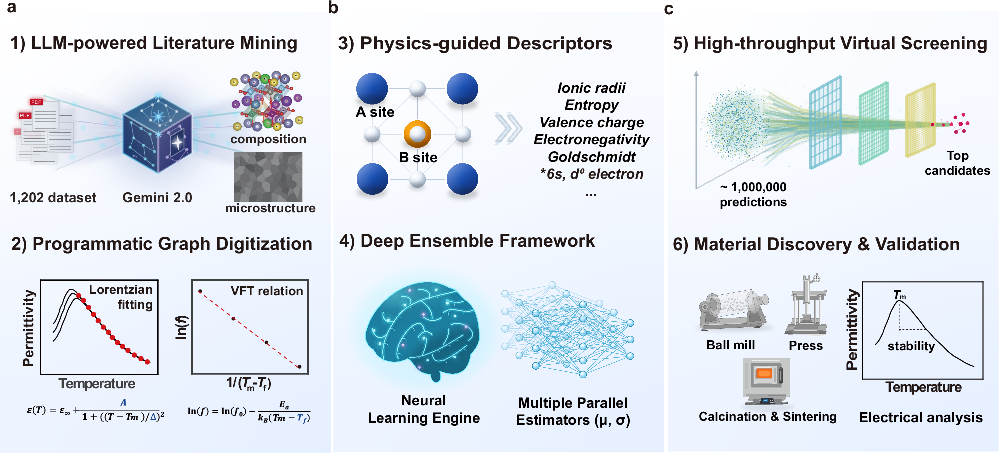

正在阅读 2026-10-05 · 第 1 批 归档。返回最新一期
每日论文推荐
检索本期论文
开启 JavaScript 后可使用筛选与排序。论文与目录可直接阅读。
本期推荐正在准备 可先浏览历史归档，或查看来源状态。
没有符合条件的论文 试试其他关键词，或减少筛选条件。
清除筛选
Semantic Scholar 2026-08-28 结构疲劳与可靠性
Bayesian Physics‐Informed Neural Networks for Probabilistic Fatigue Life Estimation of Corroded Steel Reinforcement
Guo-Wen Yao, Yong-Yi Jian, Qian-Ling Wang 等 Fatigue & Fracture of Engineering Materials & Structures
由扩展阅读升级 · 上次 2026-10-03 第 1 批 研究对象直接对应锈蚀钢筋疲劳可靠性，摘要明确给出变分贝叶斯推断与物理约束结合的方法，并报告预测性能及非正态分布识别结果，足以支持重点阅读推荐；但不足以确认优势幅度、首创性及工程部署可靠性。[摘要]
查看原推荐批次 摘要解读已完成，全文待补充
本文面向锈蚀钢筋的疲劳寿命概率预测，关注正态分布假设可能掩盖寿命分布特征、物理解释不足的问题。作者将变分贝叶斯推断与训练目标中的物理约束结合，构建贝叶斯物理信息神经网络。摘要报告其预测表现优于传统神经网络，并发现疲劳寿命分布明显偏离正态。原文称“reveals substantial deviations from normality”。本解读仅依据摘要；数据规模、误差指标和验证方案未提供，尚不能判断工程适用边界。[摘要]
原图待获取 · 查看原文
依据公开摘要整理，未核验全文细节。解读与建议不代表作者结论。 论文依据 1
中文导读
本文面向锈蚀钢筋的疲劳寿命概率预测，关注正态分布假设可能掩盖寿命分布特征、物理解释不足的问题。作者将变分贝叶斯推断与训练目标中的物理约束结合，构建贝叶斯物理信息神经网络。摘要报告其预测表现优于传统神经网络，并发现疲劳寿命分布明显偏离正态。原文称“reveals substantial deviations from normality”。本解读仅依据摘要；数据规模、误差指标和验证方案未提供，尚不能判断工程适用边界。[摘要]
阅读建议 建议面向疲劳可靠性研究重点阅读，尤其关注寿命分布识别、物理约束与贝叶斯不确定性量化的结合；摘要明确报告“captures the empirical distributional features”，但性能优势仍需全文中的定量验证支撑。[摘要]
作者 Guo-Wen Yao, Yong-Yi Jian, Qian-Ling Wang, Xuanbo He, Fanhua Zeng, Shiyong He, Shi-Cong Yang
研究问题 研究针对锈蚀钢筋的腐蚀—疲劳失效及其寿命预测，背景涉及桥梁结构退化。摘要指出传统概率神经网络常“assume a normal distribution”，可能遮蔽实际寿命分布特征。解读：核心问题不仅是预测寿命，还包括预测分布能否恰当服务可靠性决策。[摘要]
方法与路线 框架采用贝叶斯物理信息神经网络，以疲劳数据更新先验并获得后验，推断手段为“variational Bayesian inference”。物理约束通过训练目标嵌入网络，引导预测满足物理要求。摘要没有说明具体物理方程、先验设置及损失权重，无法复原实现细节。[摘要]
创新与比较 解读：摘要呈现的方法特色，是把物理约束、贝叶斯学习与寿命分布刻画放在同一预测框架中，强调“without imposing a predefined distributional form”。但这不等于模型完全没有分布假设；缺少相关工作比较及模型设定，不能据此认定首创性。[摘要]
证据与发现 摘要报告模型在预测表现上“consistently outperforms conventional neural networks”，并称其捕捉到疲劳寿命经验分布的非正态特征。前者属于性能比较，后者涉及分布识别；两项均未附数值、样本量或检验结果，因此只能确认作者报告的发现，不能量化优势。[摘要]
局限与边界 目前可确认的是资料局限，而非已证实的模型缺陷。摘要仅以“Experimental results show”引出实验结论，未交代数据来源、腐蚀程度范围、加载条件或独立测试方案，也未说明区间校准情况。因此，跨工况泛化能力与不确定性估计是否可靠，现有证据不足。[摘要]
方向关联 解读：该研究与疲劳可靠性方向直接相关，其强调“distribution‐aware modeling”，提示寿命分布形态值得纳入可靠性分析。对结构设计及智能运维，概率寿命输出可作为风险评估的候选输入；但摘要未展示结构级失效概率、巡检策略或设计优化应用。[摘要]
后续研究建议 建议：阅读全文时优先核对物理约束形式、后验近似和预测区间验证，并检查数据划分是否支持独立评价。围绕摘要提出的“uncertainty quantification”，可进一步研究不同腐蚀程度与加载条件下的分布校准及尾部预测；这些是后续研究建议，不是作者已完成的成果。[摘要] 结构疲劳与可靠性
Crossref 2026-06-15 CNS 子刊 结构生成式设计与可靠性优化
Machine-learning-guided inverse design of lead-free relaxors enabled by multimodal literature mining
Kwanwoo Song, Youngmin Kim, Jaehyun Kim 等 Nature Communications
全文精读已完成
本文针对无铅弛豫介电材料高介电常数与温度稳定性难以兼顾的问题，将448篇文献整理为1202条数据，以物理描述符和深度集成模型进行三目标逆向筛选，最终确定低Sn掺杂组成窗口。 实验显示，两种候选保有超过3300的室温低频介电常数，并满足三个指定高温点的稳定性要求。 重点在文献数据标准化、约束筛选与实验验证，而非全新母体系或完整电容器可靠性认证。

查看大图
Fig. 1 · Workflow of this study.
原文图注：a Dataset establishment through LLM-powered literature mining and programmatic graph digitization. b Machine-learning-based framework integrating physics-guided descriptor engineering with a deep ensemble model for robust property prediction. c Discovery pipeline including high-throughput virtual screening to identify top candidates, followed by material synthesis and electrical characterization for experimental validation. The crystal-structure schematic in Fig. 1a was visualized using VESTA (Momma, K. & Izumi, F. VESTA 3 for three-dimensional visualization of crystal, volumetric and morphology data. J. Appl. Crystallogr. 44, 1272–1276 (2011)).
Song, Kwanwoo et al.原文图页 · CC BY-NC-ND 4.0
依据论文全文整理。解读与建议不代表作者结论。 论文依据 1
中文导读
本文针对无铅弛豫介电材料高介电常数与温度稳定性难以兼顾的问题，将448篇文献整理为1202条数据，以物理描述符和深度集成模型进行三目标逆向筛选，最终确定低Sn掺杂组成窗口。 实验显示，两种候选保有超过3300的室温低频介电常数，并满足三个指定高温点的稳定性要求。 重点在文献数据标准化、约束筛选与实验验证，而非全新母体系或完整电容器可靠性认证。
阅读建议 推荐重点阅读其曲线数据转化、多目标约束筛选及不确定性处理方法；适合生成式设计方向的方法借鉴，但需区分组合筛选与生成模型，也不能将温度稳定性等同于长期可靠性。[P2][P5][P10]
作者 Kwanwoo Song, Youngmin Kim, Jaehyun Kim, Byeong-Jae Min, Hyun-Cheol Song, Nayeon Kang, Jungho Ryu, Ho Won Jang
结构生成式设计与可靠性优化
Crossref 2026-09-28 AI 智能运维
Machine learning applied to fiber optic SHM of inflatable structures for anomaly detection and classification
Osgar John Ohanian, Douglas A. Litteken, Thomas C. Jones Structural Health Monitoring
摘要解读已完成，全文待补充
本文面向充气式柔性空间栖居结构，利用嵌入式光纤分布式应变信号开展异常检测、分类与定位。研究以NASA约翰逊航天中心三分之一缩比充气结构蠕变试验数据训练卷积神经网络，处理一维和二维应变历史，并通过并行卷积层识别不同时间尺度的特征。摘要报告准确率为“99.6% or better”，但未说明数据划分及各类事件表现。本文适合关注柔性结构损伤识别与智能运维的研究者，以下仅作摘要级解读。[摘要]
原图待获取 · 查看原文
依据公开摘要整理，未核验全文细节。解读与建议不代表作者结论。 论文依据 1
中文导读
本文面向充气式柔性空间栖居结构，利用嵌入式光纤分布式应变信号开展异常检测、分类与定位。研究以NASA约翰逊航天中心三分之一缩比充气结构蠕变试验数据训练卷积神经网络，处理一维和二维应变历史，并通过并行卷积层识别不同时间尺度的特征。摘要报告准确率为“99.6% or better”，但未说明数据划分及各类事件表现。本文适合关注柔性结构损伤识别与智能运维的研究者，以下仅作摘要级解读。[摘要]
阅读建议 推荐重点阅读其分布式应变数据组织方式及并行卷积设计：前者连接连续空间感知与事件定位，后者针对不同时间尺度的异常特征；但需通过全文核查准确率对应任务及验证设置。[摘要]
研究问题 研究关注充气式柔性空间栖居结构约束层的失效及未来失效征兆，需要同时回答异常是否发生、属于何种事件以及发生在哪里。摘要以“indicators of future failure”明确预警目标，研究问题不止于识别已发生的破坏，也涉及蠕变演化中的风险征兆。[摘要]
方法与路线 研究采用嵌入式光纤分布式应变感知，沿传感器的数据间距为“2.6 mm”。训练数据来自采用航天级材料与制造工艺的三分之一缩比蠕变试验；卷积神经网络处理一维、二维应变历史，并行卷积层用于提取不同时间尺度的特征。[摘要]
创新与比较 解读：值得关注的方法特色是将分布式光纤应变历史与多时间尺度卷积处理结合，并覆盖事件检测、分类和定位。摘要使用“Parallel convolutional layers”说明网络设计，但不足以确认架构首创性；作者关于未见同等空间可部署技术的表述不能替代系统比较。[摘要]
证据与发现 摘要列出的识别对象包括纱线与带条断裂、持续损伤、压力下降，以及提示临近爆裂的蠕变趋势异常，并报告模型准确率为“99.6% or better”。该数值支持进一步阅读，但摘要没有给出类别级指标或定位误差，不能认定所有事件均达到相同精度。[摘要]
局限与边界 摘要未交代样本规模、训练测试划分、类别分布、误报漏报及预警提前量，因此高准确率的适用范围尚不清楚。这些是当前资料的证据缺口，而非已证实的方法缺陷。数据来源明确为“one-third-scale”试验，摘要也不足以确认全尺寸或在轨泛化能力。[摘要]
方向关联 解读：该研究与智能运维直接相关，因为模型输出覆盖异常检测、分类和物理定位，可为状态评估提供信息。摘要提及“overall structural integrity”；但若进一步用于结构设计反馈或可靠性量化，仍需建立监测特征与承载能力、失效概率之间的关系，摘要未提供此类模型。[摘要]
后续研究建议 建议：阅读全文时优先核查数据是否按独立试件或试验划分、相邻时间窗是否跨训练测试集，以及不同事件的召回率和误报率。围绕摘要提出的“impending burst”，还应核查预警提前量；后续可设计跨工况验证与并行卷积消融试验，这些是研究建议，并非作者已完成的工作。[摘要] AI 智能运维
Google Scholar 2026 结构疲劳与可靠性
Z Xue, C Yu, Q Yang 等 Z Xue, C Yu, Q Yang, D Zhang, J Li, X Hu - International Journal of Fatigue, 2026 - Elsevier
暂时无法获取资料 · 将自动重试
… , leading to fatigue life degradation and challenges in structural reliability assessment. This … neural network (PIBNN) for probabilistic fatigue life prediction of 2024 aluminum alloy with …
原图待获取 · 查看原文
摘要
… , leading to fatigue life degradation and challenges in structural reliability assessment. This … neural network (PIBNN) for probabilistic fatigue life prediction of 2024 aluminum alloy with …
作者 Z Xue, C Yu, Q Yang, D Zhang, J Li, X Hu
结构疲劳与可靠性
复制引用
Elsevier / Scopus 2026-08-06 结构生成式设计与可靠性优化
Generative design of bacteriophages with genome language models
King S.H. Science
摘要解读已完成，全文待补充
【摘要】研究以ΦX174为模板，用基因组语言模型生成完整噬菌体基因组，旨在设计具有目标宿主嗜性的可存活噬菌体。实验获得16株在实验室条件下适合度表现不同的噬菌体；冷冻电镜确认，其中一株的衣壳采用进化关系较远的DNA包装蛋白。生成噬菌体组成的混合制剂还能克服大肠杆菌对ΦX174的抗性。[摘要] 解读：工作将生成式设计推进到基因组尺度，但摘要不足以判断生成成功率、治疗安全性与工程迁移价值。
原图待获取 · 查看原文
依据公开摘要整理，未核验全文细节。解读与建议不代表作者结论。 论文依据 1
中文导读
【摘要】研究以ΦX174为模板，用基因组语言模型生成完整噬菌体基因组，旨在设计具有目标宿主嗜性的可存活噬菌体。实验获得16株在实验室条件下适合度表现不同的噬菌体；冷冻电镜确认，其中一株的衣壳采用进化关系较远的DNA包装蛋白。生成噬菌体组成的混合制剂还能克服大肠杆菌对ΦX174的抗性。[摘要] 解读：工作将生成式设计推进到基因组尺度，但摘要不足以判断生成成功率、治疗安全性与工程迁移价值。
阅读建议 建议作为生成式设计的跨领域案例选读：摘要提供了完整基因组生成、存活验证和抗性菌株实验线索，但与智能运维、结构设计及可靠性研究并不直接对应，不宜仅凭主题标签重点推荐。[摘要]
研究问题 【论文摘要】研究关注完整基因组编码的复杂相互作用，而非单个基因的孤立功能，原文指出“complex interactions encoded by entire genomes”。[摘要] 解读：核心问题是生成模型能否在基因组尺度协调这些相互作用，产生可存活且具有目标宿主嗜性的噬菌体。
方法与路线 【论文摘要】作者使用基因组语言模型，以ΦX174为设计模板生成完整基因组，再以实验检验噬菌体存活及适合度，并借助冷冻电镜检查一个生成噬菌体的衣壳。[摘要] 摘要未交代模型架构、训练数据、生成约束和候选筛选流程，因此尚不能还原可复现的方法步骤。
创新与比较 【论文摘要】作者将贡献表述为“the first generative design of complete bacteriophage genomes”，强调设计对象是完整噬菌体基因组。[摘要] 解读：值得关注的是从局部序列设计走向整套功能系统生成；但“首次”属于作者声明，仅凭摘要无法核查优先性或量化相对既有方法的优势。
证据与发现 【论文摘要】实验获得“16 phages with diverse fitness profiles”；冷冻电镜确认一个生成噬菌体使用进化关系较远的DNA包装蛋白，混合制剂还能克服ΦX174抗性大肠杆菌。[摘要] 这些结果分别提供存活、结构和功能层面的证据，但不等于已经验证临床疗效。
局限与边界 【资料边界】摘要将适合度观察限定于“in laboratory conditions”。[摘要] 未提供候选总数、失败比例、适合度测量定义、重复实验或统计结果，也未报告体内验证。解读：因此无法判断生成效率、结果稳定性与治疗适用范围；这些是当前资料缺口，不能断言全文也未涉及。
方向关联 【解读】与智能运维、结构设计和可靠性研究的联系主要是方法类比：生成完整候选系统后，还需以结构检查和功能试验验证可行性。[摘要] 这种验证思路可启发工程生成式设计，但摘要不涉及设备监测、承载结构或失效概率，不能把生物学成功直接视作工程可靠性提升。
后续研究建议 【建议】若继续精读，应优先核查候选生成总量、训练测试数据划分、与模板及基线的比较，以及宿主嗜性和抗性克服的测量方式。针对工程迁移，可另行研究约束生成与分层验证的结合；这是研究设想，不是作者结论，现有摘要也未证明其跨领域有效性。[摘要] 结构生成式设计与可靠性优化
本期暂无符合条件的新核心推荐，可浏览扩展阅读与历史归档。
Google Scholar 2026 结构疲劳与可靠性
W Jiang, Y Zhang, X Xie 等 W Jiang, Y Zhang, X Xie, S Wang, ST Tu - International Journal of Fatigue, 2026 - Elsevier
暂时无法获取资料 · 将自动重试
Welding residual stress is a major factor governing the fatigue performance of welded joints. In this study, the cruciform welded joints made of 2205 duplex stainless steel were …
摘要
Welding residual stress is a major factor governing the fatigue performance of welded joints. In this study, the cruciform welded joints made of 2205 duplex stainless steel were …
作者 W Jiang, Y Zhang, X Xie, S Wang, ST Tu
结构疲劳与可靠性
复制引用
OpenAlex 2026-09-29 结构生成式设计与可靠性优化
Machine learning-accelerated time integration of plasticity models
Nasrin Talebi, Magnus Ekh, Knut Andreas Meyer Computer Methods in Applied Mechanics and Engineering
全文精读已完成 · 原文有缺项
资料核对说明 参考文献[27]经原页核实，仅列至Computers and Geotechnics 159 (April) (2023)，缺少页码或文章编号，下一条直接为[28]。这是原文书目信息缺项，不是提取遗漏；影响引用定位，不影响本批图18的识读或直接改变数值结论。未补造缺失信息。 本文针对循环塑性有限元中本构积分开销高的问题，以神经网络预测状态变量增量，并通过不变量输入、解析演化方向及一致性修正保留物理约束。 作者用10循环生成训练数据，在100循环材料点和带孔板算例中验证。单增量有限元方案最大应力误差为14.3 MPa，相对相近误差的隐式方案加速约3.3倍。 解读：适合作为结构仿真的加速方法阅读，并非直接研究生成式设计；迁移前仍需核验算法记号与切线导数疑点。
依据论文全文整理。解读与建议不代表作者结论。 论文依据 1
中文导读
本文针对循环塑性有限元中本构积分开销高的问题，以神经网络预测状态变量增量，并通过不变量输入、解析演化方向及一致性修正保留物理约束。 作者用10循环生成训练数据，在100循环材料点和带孔板算例中验证。单增量有限元方案最大应力误差为14.3 MPa，相对相近误差的隐式方案加速约3.3倍。 解读：适合作为结构仿真的加速方法阅读，并非直接研究生成式设计；迁移前仍需核验算法记号与切线导数疑点。
阅读建议 推荐作为物理约束本构积分与有限元加速的方法论文重点阅读，尤其关注一致性修正和相近误差下的计时比较；不宜作为生成式设计方向的核心推荐。[P11][P17–P19]
结构生成式设计与可靠性优化
Semantic Scholar 2026-09-19 AI 智能运维
Multi-stage diffusion-based vibration signal representation for few-shot rolling bearing fault diagnosis
Hong-Zhi Fan, Chao Zhang, Jin Li 等 Journal of Vibration and Control
摘要解读已完成，全文待补充
本文针对标注稀缺条件下的滚动轴承故障诊断，提出多阶段扩散振动信号表征方法。摘要称，扩散恢复过程逐步增强故障相关成分，不同步骤分别保留全局结构、突出局部故障特征，再融合表征并使用轻量分类器识别故障。作者报告其在轴承基准数据集上的表现优于若干先进方法，尤其适用于小样本设置，但未提供具体数值与实验协议。[摘要] 解读：值得关注的是扩散过程中的多阶段信息利用，而非仅将扩散模型视为数据生成工具。
依据公开摘要整理，未核验全文细节。解读与建议不代表作者结论。 论文依据 1
中文导读
本文针对标注稀缺条件下的滚动轴承故障诊断，提出多阶段扩散振动信号表征方法。摘要称，扩散恢复过程逐步增强故障相关成分，不同步骤分别保留全局结构、突出局部故障特征，再融合表征并使用轻量分类器识别故障。作者报告其在轴承基准数据集上的表现优于若干先进方法，尤其适用于小样本设置，但未提供具体数值与实验协议。[摘要] 解读：值得关注的是扩散过程中的多阶段信息利用，而非仅将扩散模型视为数据生成工具。
阅读建议 建议作为智能运维中的小样本诊断方法候选重点阅读：摘要明确给出扩散恢复、多阶段表征融合和轻量分类的技术路线，但推荐不等于确认其性能优势，仍需全文核查实验公平性与计算代价。[摘要]
作者 Hong-Zhi Fan, Chao Zhang, Jin Li, Xiao-Feng Zhou, Ming-Yu Sun, Ke-Xi Xu, Wen-Yang Zhang, Xi-Ming Zhang
研究问题 研究问题是在有限标注数据下识别滚动轴承故障。摘要以“limited labeled data”界定核心条件，并指出训练样本不足或含噪时，传统深度学习方法容易出现性能下降。[摘要] 解读：重点是数据受限时的诊断判别能力，不能将其直接理解为无标签诊断或未知故障识别。
方法与路线 方法通过“diffusion restoration process”逐步增强振动信号中的故障相关成分，并从不同扩散步骤获取互补表征：早期保留全局信号结构，后期强调局部故障特征，融合后交由轻量分类器识别。[摘要] 摘要未交代扩散模型训练目标、阶段选择规则及融合算子，尚不能据此复现。
创新与比较 摘要提出“multi-stage representation strategy”，将不同扩散步骤作为互补信息来源。[摘要] 解读：潜在方法特色是联合利用恢复过程中的全局与局部信息，而不只依赖最终输出；但摘要没有与已有扩散诊断方法逐项比较，无法确认这一设计的首创性或独立贡献。
证据与发现 作者报告在轴承基准数据集上开展实验，相比若干先进方法具有更优诊断表现，尤其是在“few-shot settings”下。[摘要] 这支持其作为候选方法进一步阅读，但摘要没有给出指标、提升幅度、样本数量或结果波动，因此不能据此量化收益或判断优势是否稳定。
局限与边界 目前仅有摘要，以下属于证据边界而非作者承认的方法缺陷：数据集名称、噪声设置、基线配置与统计检验均未披露；“complex industrial environments”的结论也缺少现场验证细节。[摘要] 解读：工程泛化和抗噪能力仍待核实，不能把未报告的信息直接判为实验未做。
方向关联 摘要中的“industrial vibration monitoring”与智能运维的状态监测、故障识别方向直接相关。[摘要] 解读：该表征路线可能为标注稀缺的设备诊断提供参考；但与结构设计和可靠性研究的联系仅属间接，现有资料没有涉及结构优化、失效概率估计或剩余寿命预测。
后续研究建议 建议阅读全文时优先核查小样本划分、训练测试隔离，以及扩散模型是否使用额外数据；再检查单阶段与多阶段消融、分类器替换和整体推理耗时。针对摘要的“fused representations”，建议验证融合收益是否独立于模型规模与数据使用量，避免将资源差异误认为方法优势。[摘要] AI 智能运维
OpenAlex 2026-09-20 结构疲劳与可靠性
Physics-based fatigue life modelling considering welding residual stress relaxation and machine-learning-assisted residual stress threshold determination for fatigue design life
Wenchun Jiang, Yiting Zhang, Xue-fang Xie 等 International Journal of Fatigue
暂时无法获取资料 · 将自动重试
暂无可用摘要，请查看原文。
摘要
暂无可用摘要，请查看原文。
作者 Wenchun Jiang, Yiting Zhang, Xue-fang Xie, Shengkun Wang, S.T. Tu
结构疲劳与可靠性
OpenAlex 2026-09-29 结构生成式设计与可靠性优化
A machine learning enhanced substructure method for full scale topology optimization of piezoelectric graded lattice structure
Yao Meng, Chunli Zhang, Weisheng Zhang Composite Structures
摘要解读已完成，全文待补充
本文面向压电梯度晶格的三维全尺度拓扑优化，解决机电耦合分析计算成本过高的问题。方法结合显式几何构造、机器学习预测数值形函数与物理残差驱动的在线修正。摘要报告百万自由度结构计算时间由981.01降至6.91秒，并通过三个三维算例验证优化效果。解读：值得关注学习加速与物理校正如何协同服务结构设计，但当前仅有摘要，无法核查训练设置、误差指标及完整计算成本。[摘要]
依据公开摘要整理，未核验全文细节。解读与建议不代表作者结论。 论文依据 1
中文导读
本文面向压电梯度晶格的三维全尺度拓扑优化，解决机电耦合分析计算成本过高的问题。方法结合显式几何构造、机器学习预测数值形函数与物理残差驱动的在线修正。摘要报告百万自由度结构计算时间由981.01降至6.91秒，并通过三个三维算例验证优化效果。解读：值得关注学习加速与物理校正如何协同服务结构设计，但当前仅有摘要，无法核查训练设置、误差指标及完整计算成本。[摘要]
阅读建议 推荐结构生成设计与机电耦合优化研究者重点阅读，尤其关注数值形函数学习和拓扑边界在线修正的结合；智能运维方向的适用性则需另行验证。[摘要；解读]
研究问题 研究针对压电梯度晶格的三维全尺度拓扑优化：结构具有机电器件应用潜力，但机电耦合分析的计算成本限制了优化规模。摘要直接将瓶颈描述为“prohibitive computational costs”。解读：核心问题是降低优化所需分析成本，而非直接解决运维诊断问题。[摘要]
方法与路线 方法将三维移动可变形组件法（MMC）与分区坐标映射（PCM）结合以构造晶格骨架，再用机器学习预测数值形函数。针对不连续0/1拓扑边界的泛化退化，引入“physical residual-driven online correction”。摘要未说明网络架构、训练数据或修正阈值。[摘要]
创新与比较 摘要提出的技术组合是几何构造、数值形函数学习与物理残差在线修正。解读：值得关注的不是单独使用机器学习，而是针对拓扑边界处预测失效配置校正机制，使学习加速适应结构变化；但摘要不足以确认其相对既有子结构方法的首创性或具体新增贡献。[摘要]
证据与发现 摘要报告百万自由度结构计算时间从981.01降至6.91秒，并以悬臂梁、悬臂板和封闭圆柱能量采集器验证方法。其称保留全局有限元分析精度，且拓扑重构抑制局部电荷抵消。能量转换率原文为“enhanced by up to 1.56 times”，不据此换算百分比。[摘要]
局限与边界 当前仅能依据摘要评估证据边界，不能认定已核查全文。摘要未提供误差数值、计时覆盖范围、训练成本、硬件配置及对照设计细节；验证明确属于数值算例，不能替代实物试验。以上是资料缺口，并非作者已承认的局限，也不足以否定所报告结果。[摘要；解读]
方向关联 解读：论文与结构设计方向直接相关，其显式拓扑优化和梯度晶格构造契合生成设计主题。物理残差校正可为智能运维中的学习模型校验提供思路，但摘要没有监测或故障诊断研究。开头虽提及抗断裂优势，却未给出可靠性评估结果，不宜据此认定可靠性提升。[摘要]
后续研究建议 建议：后续阅读全文时优先核查训练样本如何覆盖拓扑变化、残差校正何时触发，以及981.01至6.91秒的计时是否包含学习与校正开销。若迁移至可靠性设计，可另设材料或载荷不确定性测试，检验误差对约束满足的影响；这些是研究建议，不是作者结论。[摘要；建议] 结构生成式设计与可靠性优化
本期暂无扩展阅读。
微信公众号 · 科研线索 14 条 按已订阅的公众号筛选。标注“公开检索入口”的条目提供标题、来源和检索片段，点击标题可继续查找原文；文章内容及结论尚待核验。
文章跳转若要求验证码，请在浏览器中手动完成。这些线索不占用核心与扩展论文名额。
【科技动态】2026年9月最新材料前沿动态
航空材料学报 · 2026-09-29 · 公开检索入口
(2026). DOI: 10.1038/s43246-026-01212-yPART.05耶鲁大学开发金属局部变形映射技术支撑航空发动机和燃气轮机高温材料设计向上...
公开检索入口 CJA · ICAS 2026 悉尼亮相
航空学报CJA · 2026-09-22 · 公开检索入口
2026年9月13日,航空学报杂志社一行,再次走出国门,深度参与... 两刊简介航空学报CJA_小编微 信 号:HKXBCJA_xiaobian扫码添...
公开检索入口 《航空学报》2026年第16期目录
航空学报CJA · 2026-09-14 · 公开检索入口
《航空学报》2026年 47卷 16期目录查看整期论文方式1 识别左侧二维码2 点击以下标题2026年第47卷第16期电子期刊.pdf流体力学与...
公开检索入口
来源与采集状态 11 / 12 类正常
2026-10-05 21:04 更新。常规检索：2026-09-05 至 2026-10-05。
数据采集12 项 已实现来源及本轮采集状态；公开接口无需登录即可运行。
AI 顶会论文 官方主会论文；缓存 24 小时；按研究方向和现有时间窗口筛选。
各会议采集情况 NeurIPS · 部分完成 · 已核验 139 篇，本轮方向与时间匹配 0 篇；9181 篇待补元数据；最近成功 2026-10-04；论文详情：网络连接失败ICML · 本轮无数据 · 已核验 140 篇，本轮方向与时间匹配 0 篇；5800 篇待补元数据；最近成功 2026-10-05ICLR · 本轮正常 · 已核验 9493 篇，本轮方向与时间匹配 2 篇；最近成功 2026-10-05；2026 使用官方 Oral/Poster 录用目录；2025 使用官方 Oral/Poster 录用目录AAAI · 本轮无数据 · 已核验 80 篇，本轮方向与时间匹配 0 篇；1078 篇待补元数据；最近成功 2026-10-05；还有 13 个目录分页待采集IJCAI · 本轮无数据 · 已核验 140 篇，本轮方向与时间匹配 0 篇；1567 篇待补元数据；最近成功 2026-10-05KDD · 本轮无数据 · 已核验 138 篇，本轮方向与时间匹配 0 篇；1199 篇待补元数据；最近成功 2026-10-05CVPR · 部分完成 · 已核验 139 篇，本轮方向与时间匹配 0 篇；6774 篇待补元数据；最近成功 2026-10-04；论文详情：网络连接失败ICCV · 部分完成 · 已核验 139 篇，本轮方向与时间匹配 0 篇；4718 篇待补元数据；最近成功 2026-10-04；论文详情：网络连接失败ECCV · 本轮无数据 · 已核验 140 篇，本轮方向与时间匹配 0 篇；3892 篇待补元数据；最近成功 2026-10-05ACL · 本轮无数据 · 已核验 3995 篇，本轮方向与时间匹配 0 篇；最近成功 2026-10-05EMNLP · 部分完成 · 已核验 1809 篇，本轮方向与时间匹配 0 篇；2026 官方元数据暂不可用（HTTP 404）部分完成
本期 0 篇
ResearchGate 公开索引已接入：Google Scholar / SerpApi 本轮返回 59 条 ResearchGate 元数据。 按发表年份检索；摘要为检索片段，未注明年份的记录保留为待核验线索。 当前使用公开索引，本地浏览器采集尚未产出本期记录。
本轮正常
本期 0 篇
微信公众号 公众号独立采集：最近检查 10-05 21:00（北京时间）。公众号订阅与同步：公开索引已接入：读取 11 条文章元数据，本期 11 条。 微信后台文章列表受限；已通过公开搜索获取线索，链接为检索入口，非已核验全文。 最近同步：10-05 20:35（北京时间）。 公开查询完成 3/3 项（复用缓存 0 项）。 最近检查：10-05 20:35（北京时间）。 公众号公开索引：公开索引已接入：本期读取 1 条公众号文章线索，按 35 个订阅筛选。 微信后台文章列表受限；线索提供公开检索入口，非已核验全文。 公开查询完成 3/3 项（复用缓存 3 项）。
arXiv 本轮采集完成。 本轮获取 28 条元数据。
本轮正常
本期 0 篇
出版平台14 项 依据论文的期刊与原文链接归类，可筛选本期已有记录。
SIAM 按期刊名称或原文链接筛选已有记录；未独立抓取此平台。
期刊平台筛选
本期 0 篇